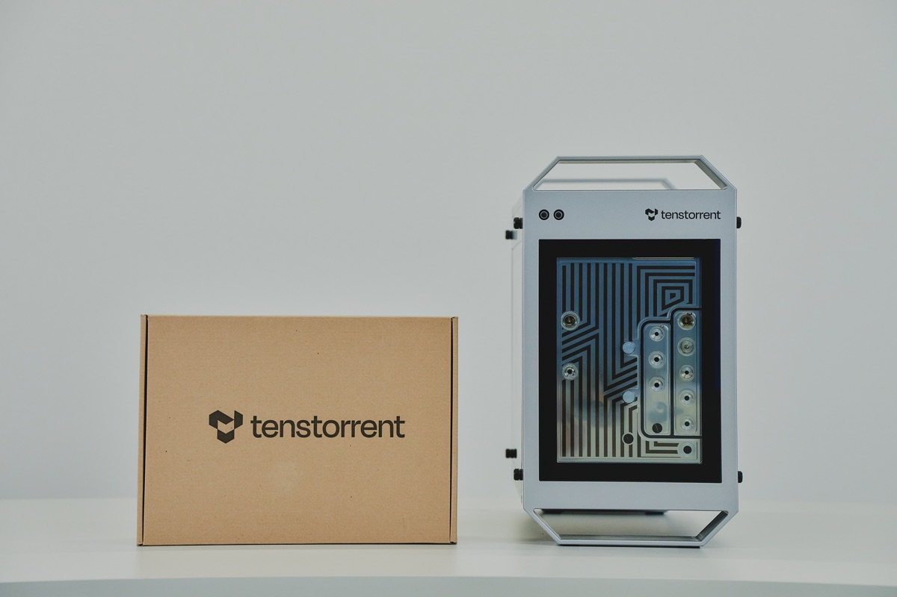
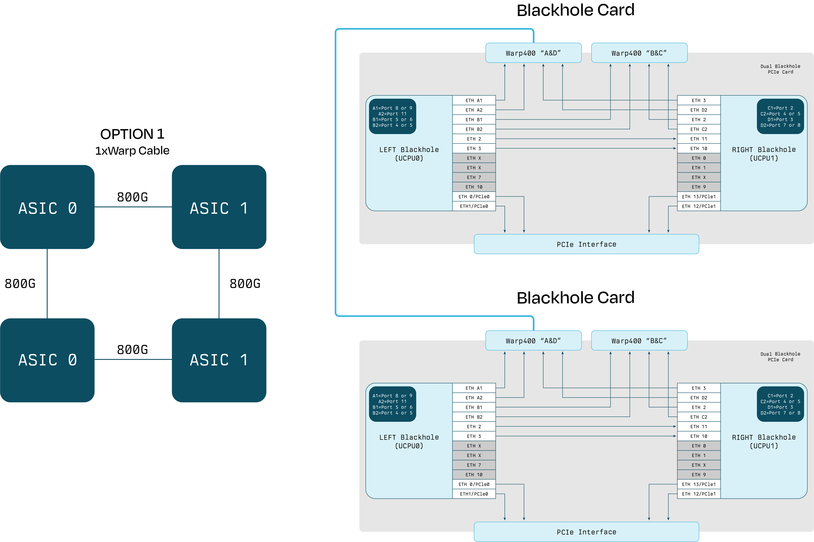

{kind=link}

Specifications
This document provides detailed technical specifications for the TT-QuietBox™ 2 (Blackhole®) workstation. It lists package contents, hardware components, physical dimensions, and operating requirements.
Package Contents
The Tenstorrent TT-QuietBox 2 (Blackhole) system package includes the following items:
1x TT-QuietBox 2 (Blackhole) workstation
1x Power Supply Cord (C19 to NEMA 5-15P)
1x AnkerWork S500 Speakerphone
TT-QuietBox 2 System Specifications
Specification |
Details |
|---|---|
Model |
TW-04003 |
Operating System |
Ubuntu 24.04.3 LTS |
CPU |
Ryzen 7 9700X 65W Granite Ridge 3.8GHz |
Motherboard |
ASRock B850M-C, mATX |
Memory |
256 GB (4x64 GB) DDR5-5600 UDIMM, CL46 (4 slots, 0 free) |
Storage |
4TB (WDS400T4B0E-00BKY0) |
Tenstorrent Processors |
2x Blackhole p300c cards (4 Blackhole chips) |
External I/O Ports |
1x HDMI Port |
Connectivity |
1 x RJ45 LAN Port
2x WiFi Antenna
|
Power Supply |
1600W Cooler Master V Platinum 1600 V2 |
Sound Pressure |
38 dBA (under max operating load) |
System Dimensions |
Height: 15.6” (39.5 cm) Width: 9.1” (23.1 cm) Depth: 17.8” (45.2 cm) (including handles and feet) |
System Weight |
20 kg (44 lbs) +/- 1.5 lbs |
Shipping Box Dimensions |
Height: 20.7” (52.5 cm) Width: 14.4” (36.7 cm) Depth: 25.0” (63.5 cm) |
Shipping Box Weight |
23.2 kg (52 lbs) |
Blackhole p300 Card Specifications
TT-QuietBox 2 is powered by two p300c cards for a total of four Blackhole chips. The table below describes the specifications of a single p300c card for your reference. Please note the p300c card is not sold separately outside of the QuietBox 2. If you are interested in a Blackhole card to add to your existing system, check out our available cards.
Specification |
Single p300c card |
QuietBox 2 (two cards) |
|---|---|---|
Part Number |
TC-03007 |
2x TC-03007 |
Tensix Cores |
240 |
480 |
AI Clock |
1.35 GHz |
1.35 GHz |
SRAM |
360 MB (1.5 MB per Tensix core) |
720 MB (1.5 MB per Tensix core) |
Memory |
64GB GDDR6 |
128GB GDDR6 |
Memory Speed |
16 GT/sec |
16 GT/sec |
Memory Bandwidth |
1024 GB/sec |
- |
TBP (Total Board Power) |
600W |
- |
Cooling |
Liquid |
Liquid |
Connectivity |
2x Warp400 (internally connected, diagrams below.) |
- |
Dimensions (WxDxH) |
21.66mm x 307mm x 112.65mm |
- |
Internal Topology
The workstation’s two p300c cards are connected internally with a Samtec ARP6 series High Performance cable. The below topology is pre-installed inside the QuietBox 2 by Tenstorrent and is outlined here for your reference.
{kind=link}

Supported Models
For the most up-to-date list of models supported by TT-QuietBox 2, check the Developer Hub.
Power and Operating Conditions
Topic |
Specification |
|---|---|
Peak Power Consumption |
1.5kW |
Operating Temperature |
50°F to 95°F (10°C to 35°C) |
Operating Relative Humidity |
10% to 90% (non-condensing) |
Non-Operating Temperature |
-4°F to 140°F (-20°C to 60°C) |
Non-Operating Relative Humidity |
5% to 95% (non-condensing) |
The Power Supply Unit (PSU) on the TT-QuietBox 2 is rated to draw up to 1600W of power and has demonstrated drawing 1200W of power running image generation models. A standard 15A circuit can handle up to 1800W. When choosing the location of your TT-QuietBox 2, be mindful of the other electronics which may draw power from the same circuit. We recommend putting the TT-QuietBox 2 on a dedicated circuit, if not you may trip a breaker.
System Overview

No |
Item |
Description |
|---|---|---|
1 |
Handle |
Used to aid in lifting the workstation |
2 |
Glass Panel |
Showcases internal Accelerator cards |
3 |
Thumbscrew |
Enables toolless access to the interior |
4 |
Power and Reset Buttons |
Powers the workstation on/off and resets the workstation |
System Rear View

Number |
Item |
|---|---|
1 |
1x HDMI Port |
2 |
1 x BIOS Flashback Button |
3 |
1x USB 3.2 Gen 2 Type-A Port |
4 |
4x USB 2.0 Type-A Ports |
5 |
Power Cable Port |
6 |
On/Off Power Supply Unit Switch |
7 |
1x USB 3.2 Gen 2 Type-C Port (non-video) |
8 |
2x USB 3.2 Gen 1 Type-A Ports |
9 |
1x RJ45 TBD GbE LAN Port |
10 |
2x WiFi Antenna |
11 |
HD Audio Jacks: Line in / Front Speaker / Microphone |
Important Safety Warnings
Electrical Safety
Danger
Failure to follow these electrical safety instructions may result in electric shock, fire, or damage to the workstation.
Ensure you are connecting the power to an AC power circuit with sufficient capacity to support 15A. Failure to connect to dedicated 15A breaker may result in tripping the breaker, or dangerous operating conditions.
Do not share the outlet with other high-power devices. Avoid using household surge strips, extension cords, or multi-outlet power taps; not all are rated for the sustained current of this system.
Use only the provided C19 power cable, and ensure it is plugged into a properly grounded outlet. Do not bypass or disable the grounding pin. Using a non-Tenstorrent approved power cable may result in dangerous operating conditions.
If the circuit becomes overloaded or if the breaker trips during power-up or operation, immediately disconnect and remove power. Then, have a qualified electrician inspect and verify the circuit’s capacity before resuming setup.
Never attempt to reset or bypass a tripped breaker without first confirming the circuit integrity; failure to do so may result in overheating, voltage drop, or irreversible damage.
Electrostatic Discharge Safety
Important
Before opening the TT-QuietBox 2 Blackhole workstation or handling any internal components, you must discharge static electricity from your body to avoid damaging sensitive hardware. Electrostatic discharge can permanently damage Tensix cores, memory modules, or other components. Handle with care and always follow ESD-safe practices.
Touch a grounded metal surface, such as a grounded rack, chassis, or power supply casing, before and during internal handling.
Ideally, wear an ESD wrist strap connected to a verified ground point.
Avoid working on carpeted floors or in low-humidity environments where static buildup is more likely.
Do not touch any processor, memory module, connector, or printed circuit board (PCB) circuitry unless absolutely necessary, and only after properly discharging.
Other Notices to Users
This equipment has been tested and found to comply with the limits for a Class B digital device, pursuant to part 15 of the FCC Rules. These limits are designed to provide reasonable protection against harmful interference in a residential installation.
This equipment generates, uses and can radiate radio frequency energy and, if not installed and used in accordance with the instructions, may cause harmful interference to radio communications. However, there is no guarantee that interference will not occur in a particular installation.
Changes or modifications to this workstation which are not expressly approved by Tenstorrent may void the user’s authority to operate it. Tenstorrent cannot accept responsibility for any failure to satisfy any Safety, EMC or regulatory requirements that result from non-approved modification of the product, including the fitting of non-Tenstorrent cards, cables, or any other hardware or software modification which may affect compliance. To avoid damage and personal injury, only use Tenstorrent approved hardware with this device.
Do not use the TT-QuietBox 2 in a way that it was not designed to be used.